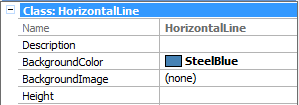
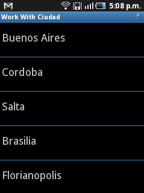
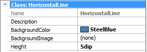
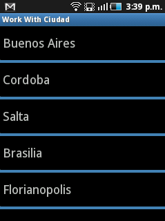
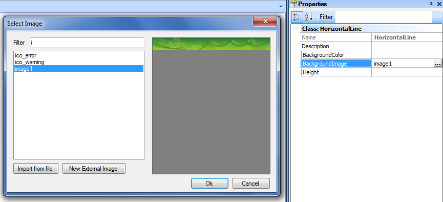
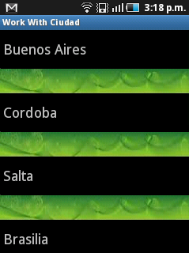

Within the Grid or Table class of a theme for smart devices, two properties should be taken into account for managing Horizontal Lines.
1. Show Horizontal Line Separator Between Rows property
This property enables or disables the "Horizontal Line Separator" property.
Values: True or False (Default)
2. Horizontal Line Separator property
It makes reference to the HorizontalLine class (or a subclass of it). The HorizontalLine class is where all settings are made to manage the Horizontal Lines' user interface.
- Name: Class (or subclass) name
- Description: Description of the class. It is useful only as internal documentation of the GeneXus developer.
- BackgroundColor: It allows setting a color for the line.
- BackgroundImage: It allows setting an image for the line.
- Height: Line (or image) height.
- Setting a color
 
- Changing height
 
- Setting an image
 
- If a background color or image are not set but a height value is provided, a blank space of that height will be displayed.
- If an image and color are set, they are both used.
- If an image is set without indicating its height, the image height is used. In all cases, the image is horizontally “stretched”.
- If a color is set without indicating a height value, a 1 pixel line is drawn.
Android
- Space is not “reserved” for separators in tables.
- In tables, the separator doesn’t take the entire screen width.
iOS
- At the grid level, only changing the color is supported.
This class and those properties that reference to it are available as of GeneXus X Evolution 2 Upgrade #2.
|